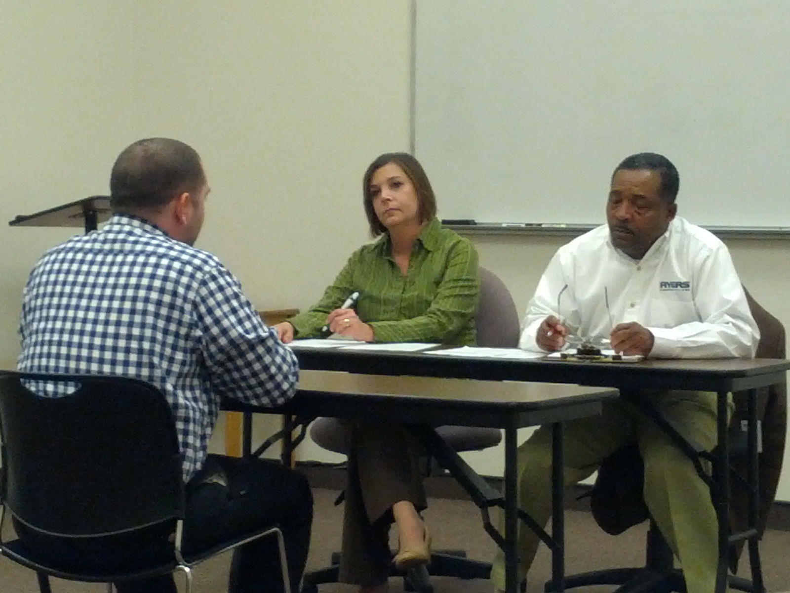

OUR STORY
Kenya
In Kenya, Ycenter is pioneering work in youth led agricultural innovation. We work with experienced
Mozambique on the south-eastern coast of Africa where 29% of deaths are occurred due to this
Every 60 seconds someone falls prey to Malaria in Sub-Saharan African region. This includes
partners such as CANIS (The Center for Agricultural Networking and Information Sharing) & VACID
Africa to engage youth in solving the country’s agricultural challenges
Participants talking to the head of an organic farmer co-operative.
ODATA (Open Data) plans to create ATEX hubs in sync with local country governments, universities
that will drive Farmer owned and youth driven value chain enterprises in Agriculture sector. ATEX
hubs are farmer owned and youth driven value chain enterprises in Agriculture sector. Combining
the knowledge of farmers with the new perspectives of innovative youth, our aim is to create
agricultural change by involving multiple stakeholders.
Vision Builder has also done two experiential learning programs in Nairobi, working with youth to create
social enterprises focussing on agricultural innovations. The programs were run with Digital
Opportunity Trust (DOT Kenya) an international non-profit that trains young people to deliver
information and communications technology (ICT) training in their own communities.

Mock interviews session in class.
The goal of the programs was to engage youth ,through our experiential learning pedagogy, to work
on agricultural challenges. Over the two programs we had several promising projects, some of
which are being supported by the University of Nairobi.